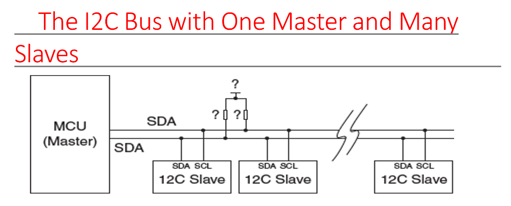
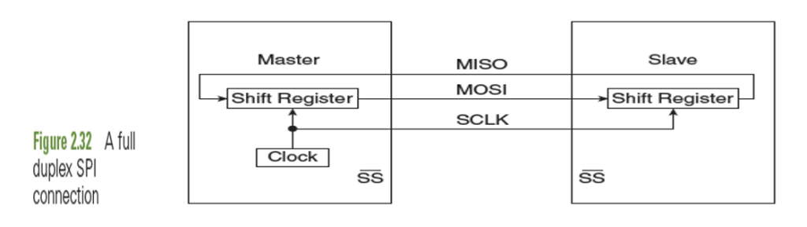
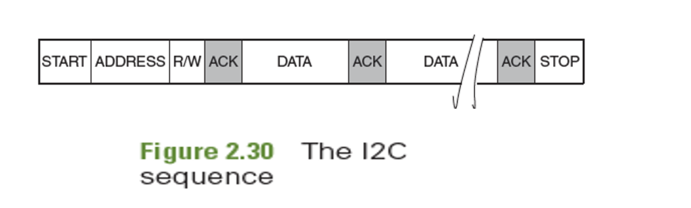
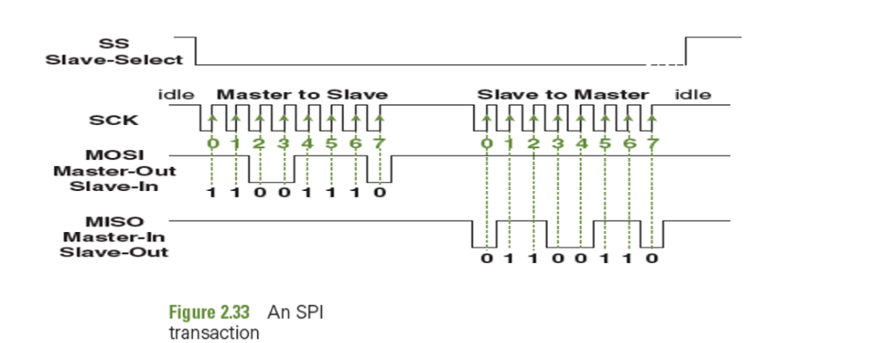
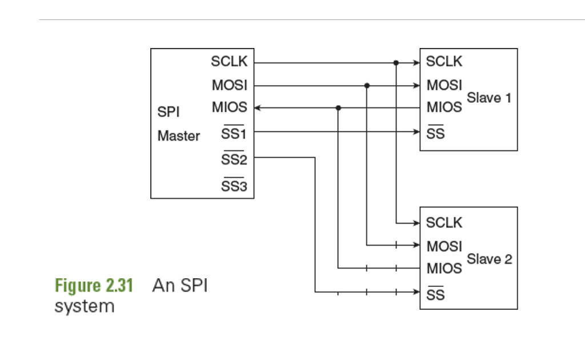

🎓 MSRIT/VTU Expert Faculty Study Portal | Analytical Learning through NPTEL videos, illustrative case problems
Microcontrollers require interfaces to connect with external sensors, displays, and storage chips. Using parallel buses (e.g. 8 data wires) requires too many physical pins and makes PCBs crowded. Serial onboard protocols solve this by transmitting data bit-by-bit sequentially over a minimum number of wires.
- UART (Universal Asynchronous Receiver-Transmitter): Asynchronous, point-to-point. No shared clock wire; both transmitter (Tx) and receiver (Rx) must use independent clock generators set to the exact same Baud Rate (e.g. 9600). Data is packaged into frames starting with a Start bit (low), 8 data bits, optional parity, and ending with Stop bits (high). - I2C (Inter-Integrated Circuit): Synchronous, half-duplex bus. Uses 2 bidirectional open-drain lines: Serial Data (SDA) and Serial Clock (SCL). Since pins are open-drain, external pull-up resistors are required. Supports multiple masters and slaves using 7-bit software addresses.


• SEE 2023 Q4(a): Differentiate between Inter Integrated Circuit (I2C) bus and Serial Peripheral Interface (SPI) Bus. (8 Marks)
• SEE 2025 Q3(b): With a diagram, explain Inter integrated circuit (I2C) on-board protocol. (8 Marks)
• SEE 2024 Q3(b): With a diagram, explain Serial peripheral interface (SPI) on -board protocol. (6 Marks)
UART is asynchronous point-to-point. I2C uses 2 open-drain lines with software addressing. SPI uses 4 push-pull lines for high-speed, full-duplex hardware-selected operations.
Choosing between I2C and SPI is a classic engineering trade-off based on project constraints: - I2C Positive Aspects: (1) **Low Pin Count:** Uses only 2 physical pins (SDA and SCL) regardless of how many slave devices are on the bus (up to 127). (2) **Multi-Master Support:** Native collision detection and arbitration built into the protocol. (3) **ACK/NACK Verification:** Handshake confirmation for every single byte sent. (4) **Simpler PCB Routing:** Saves board space and trace layout complexity.


• SEE 2024 Q3(a): Mention the positive aspects of I2C protocol. (7 Marks)
I2C minimizes pins (only 2) and features software addressing and ACKs, while SPI maximizes communication speed and throughput by using physical hardware slave select lines.
Normally, when a peripheral (like a ADC or UART receiver) gets a new data byte, it triggers a CPU interrupt. The CPU pauses its main program, reads the data from the peripheral register, and writes it into RAM. If a high-speed peripheral transfers thousands of bytes per second, this CPU context-switching causes a processing bottleneck.
Direct Memory Access (DMA) bypasses the CPU. The DMA controller is a secondary hardware coprocessor that takes temporary mastership of the system bus and transfers data blocks **directly** between peripherals and RAM, or between RAM blocks. The CPU is completely freed to process other code in parallel.
• SEE 2023 Q3(c): What is Direct Memory Access? Explain the typical setting of a DMA with neat diagram. (5 Marks)
• MAKEUP2023 Q3(a) / SEE 2023(O) Q3(b): Discuss with appropriate diagram that illustrates the use of DMA controllers on most advanced MCUs. (8 Marks)
DMA controllers bypass the CPU, using DREQ/DACK and HOLD/HLDA handshakes to move blocks of data directly between memory and peripherals.
Semiconductor memory is categorized into Volatile (loses contents on power-off) and Non-Volatile (retains contents): - **Volatile Memory (RAM):** - **Static RAM (SRAM):** Uses a 6-transistor (6T) latch circuit to store each bit. Fast, needs no refresh cycles, but low density and expensive. Used for high-speed caches and MCU on-chip RAM. - **Dynamic RAM (DRAM):** Stores each bit as an electrical charge on a tiny capacitor (1T + 1C). High density and cheap, but slow because the charge leaks and requires continuous **Refresh Cycles** (read/write reload every few milliseconds). Used for PC system memory. - **Non-Volatile Memory (ROM/Flash):** - **ROM / PROM / EPROM / EEPROM:** Read-only memories. EEPROM allows byte-level electrically erasing and reprogramming, but is slow. - **Flash Memory:** A modern type of EEPROM erased in large blocks. divided into **NOR Flash** (supports byte-level random access, used to execute programs directly) and **NAND Flash** (block access only, high density, used for mass storage/SD cards).
• SEE 2025 Q3(c) / SEE 2024 Q3(c): Write the classification of semiconductor memory types. (7 Marks)
Memory is split into volatile (SRAM, DRAM) and non-volatile (ROM, EEPROM, NOR/NAND Flash). SRAM is fast and latch-based; DRAM is capacitor-based and requires refresh cycles.
An asynchronous SRAM chip does not utilize a system clock input to synchronize its access. Instead, all reading and writing operations are controlled strictly by the state and timing of physical control lines asserted by the CPU: - **Chip Select (/CS):** Must be driven LOW to wake up the chip. - **Write Enable (/WE):** Pulsed LOW to execute a write operation. - **Output Enable (/OE):** Driven LOW during a read to open the SRAM's output data buffers.
Timing Constraints: Because logic gates and transistors take time to switch, there are strict timing limits: - **Address Access Time (t_AA):** The delay from when the address becomes stable on the bus until the valid data is outputted by the SRAM. - **Data Setup Time (t_DS):** The minimum time data must remain stable on the data bus before the rising edge of /WE. - **Data Hold Time (t_DH):** The minimum time data must remain on the data bus after /WE goes high to ensure it latches into the 6T cell.
• SEE 2023 Q3(a): With the timing diagram, explain memory read and write cycles of an SRAM chip. (8 Marks)
• MAKEUP2023 Q4(a) / SEE 2023(O) Q3(a): Illustrate with appropriate diagram for the working principle of asynchronous read and write operation for an SRAM chip type. (8 Marks)
Asynchronous SRAM is controlled by active-low CS, OE, and WE pins. Transistor switching delays establish access parameters like Address Access, Data Setup, and Data Hold times.
Embedded systems are frequently battery-powered (smart watches, IoT sensors). Designers must minimize power consumption to extend battery life. Power consumption has two sources: 1. Dynamic Power (P = C × V2 × f): Power consumed when logic gates switch states, charging internal capacitance (C) at frequency (f) under supply voltage (V). 2. Static Power (Leakage): Power leaked through transistors even when the processor is completely idle.
Thermal Design Power (TDP) represents the maximum amount of heat (in Watts) that the cooling system (heatsinks, fans) of a processor is designed to dissipate under maximum running workloads. If the system exceeds its TDP without adequate cooling, it will undergo thermal runaway and burn out.
• SEE 2023 Q3(b): How is power management taken care at design stage? Explain Thermal Design Power (TDP). (7 Marks)
Power management uses voltage/frequency scaling and sleep states to reduce dynamic (C V2 f) and static power, keeping active heat below the Thermal Design Power (TDP) limit.
Embedded firmware is developed on a host computer (PC) and deployed to run on the target microcontroller hardware. An **Integrated Development Environment (IDE)** like Keil microVision compiles and packages this code using specialized tools:
• MAKEUP2023 Q4(c): Discuss the Code editor, Cross compiler, Debugger and Graphical user interface for an application program from the context of integrated programming environment. (6 Marks)
Embedded software tools include code editors, cross-compilers (generating target-specific code), linkers/locators (mapping physical memory), and JTAG debuggers/simulators.
Multi-byte variables (like a 32-bit integer) occupy 4 bytes of memory. The order in which these bytes are placed at memory addresses defines the **Endianness**: - Little-Endian: The least significant byte (LSB) is stored at the lowest numerical memory address. Default for ARM architecture. - Big-Endian: The most significant byte (MSB) is stored at the lowest memory address. Default for network protocols.
Memory is physically structured as 4-byte (32-bit) words. A memory access is **aligned** if a variable is loaded from an address that is a multiple of its data size (e.g., a 32-bit word must be loaded from an address divisible by 4: 0x4000, 0x4004). If we load a word from 0x4001, it is **misaligned**. A misaligned access forces the processor to perform two separate memory read cycles and stitch the bytes together in hardware, causing a severe speed penalty.
• SEE 2025 Q3(a): Why data alignment is important? What are the consequences of misaligned data access? (5 Marks)
• SEE 2023(O) Q3(c): Write the following numbers in the big endian and little endian format in the address 0x450011: i) 0xDC67 ii) 0x1908DEF8. (6 Marks)
• MAKEUP2023 Q3(b) / SEE 2023(O) Q4(b): Discuss the use of memory banks for a 16- bit & 32 bit processor. (6 Marks)
Little-Endian stores LSB first; Big-Endian stores MSB first. Aligned accesses align with size boundaries to prevent double-access hardware penalties.
Processor cores must communicate with peripheral registers to control hardware. There are two primary I/O addressing schemes:
1. Memory-Mapped I/O (MMIO): Peripheral control registers are mapped directly to standard memory addresses inside the processor's unified 4GB address space. The CPU accesses peripherals using the exact same instructions (e.g. LDR/STR) used to access RAM. Simple to program, but consumes address space. Used in ARM cores.
2. Port-Mapped I/O (PMIO): Peripherals are mapped to a completely separate, dedicated I/O address space. The CPU must use specialized hardware instructions (like IN and OUT in x86) to access ports. This protects memory address space but requires more complex CPU instruction decoding logic.
Memory-Mapped I/O maps peripheral control registers directly into standard RAM address space, allowing uniform LDR/STR access without requiring special I/O instructions.
A **Stack** is a last-in-first-out (LIFO) memory structure managed by the Stack Pointer (SP/R13) register. There are four stack configurations based on two behaviors:
STMFD/LDMFD).
The **CPSR (Current Program Status Register)** holds active condition flags that are updated by arithmetic operations: - N (Negative): Set if Bit 31 of the result is 1 (negative signed value). - Z (Zero): Set if the result is exactly 0. - C (Carry): Set if an unsigned addition overflows, or an unsigned subtraction does *not* require a borrow. - V (Overflow): Set if a signed arithmetic operation overflows the range of a signed integer.
• SEE 2025 Q4(a): Briefly explain the purpose of the following condition flags: i. Zero (Z) ii. Negative (N) iii. Carry (C) iv. Overflow (V). (8 Marks)
• SEE 2024 Q4(a): Determine condition flags for 16-bit operations. (8 Marks)
• SEE 2025 Q4(c): Discuss the operations of the descending stack in ARM7. (6 Marks)
ARM uses a Full Descending stack (SP points to last occupied slot, grows down). CPSR condition flags (N, Z, C, V) track ALU results to enable conditional execution.
Write the 32-bit hexadecimal value 0x1908DEF8 into memory starting at address 0x450011 (SEE 2023 Old PYQ):
| Memory Address | Big-Endian Layout | Little-Endian Layout |
|---|---|---|
0x450011 | 0x19 (MSB) | 0xF8 (LSB) |
0x450012 | 0x08 | 0xDE |
0x450013 | 0xDE | 0x08 |
0x450014 | 0xF8 (LSB) | 0x19 (MSB) |
Perform binary arithmetic and evaluate condition flags (N, Z, C, V) (SEE 2024 Exam numerical):
0110 0111 1000 1001 + 0001 0010 0011 0100 = 0111 1001 1011 1101Timing diagrams govern the access speed limits of SRAM. The crucial timing intervals are defined below:
Answer:
| Parameter | UART | I2C | SPI |
|---|---|---|---|
| Clocking Type | Asynchronous (No clock wire; agreed baud clock rate). | Synchronous (Shared SCL clock wire). | Synchronous (Shared SCK clock wire). |
| Wires Count | 2 lines (Tx, Rx). | 2 lines (SDA, SCL). | 4 lines (MOSI, MISO, SCK, SS). |
| Data Duplex | Full-Duplex (simultaneous send and receive). | Half-Duplex (cannot send and receive at once). | Full-Duplex (simultaneous send and receive). |
| Addressing | None (strict point-to-point only). | Software addressing (7-bit or 10-bit address byte). | Hardware addressing via active-low Chip Select (SS) lines. |
| Maximum Speed | Slow (typically up to 115.2 kbps). | Moderate (up to 400 kbps or 3.4 Mbps in high speed). | Ultra-high (typically 10 Mbps to 50 Mbps). |
| Pin Topology | Push-pull pins. | Open-drain pins, requires external 4.7kΩ pull-up resistors. | Push-pull pins, no pull-ups required. |
Hardware Connections Schemes:
I2C wiring:
Master MCU Slave 1 Slave 2
┌──────────┐ ┌──────────┐ ┌──────────┐
│ SDA │◄────────────►│ SDA │◄────────────►│ SDA │
│ SCL │◄─────────┬──►│ SCL │◄─────────┬──►│ SCL │
└──────────┘ │ └──────────┘ │ └──────────┘
├──[4.7kΩ]── VCC │
└──[4.7kΩ]── VCC │
SPI wiring:

Master MCU Slave 1 Slave 2
┌──────────┐ ┌──────────┐ ┌──────────┐
│ MOSI ├─────────────►│ MOSI ├─────────────►│ MOSI │
│ MISO │◄─────────────┤ MISO │◄─────────────┤ MISO │
│ SCK ├─────────────►│ SCK ├─────────────►│ SCK │
│ SS1 ├─────────────►│ SS │ │ │
│ SS2 ├──────────────┼────────────────────────►│ SS │
└──────────┘ └──────────┘ └──────────┘
Answer:
An asynchronous Static RAM (SRAM) chip is controlled by active-low control inputs: Chip Select (/CS), Write Enable (/WE), and Output Enable (/OE).
1. Asynchronous Read Cycle:
2. Asynchronous Write Cycle:
Answer:
Direct Memory Access (DMA) allows high-speed hardware peripherals to transfer data blocks directly to and from System RAM without involving the CPU, eliminating interrupt overhead.
Handshaking and System Architecture:
┌─────────────┐ ┌─────────────┐
│ │ HOLD (Bus Req) │ │
│ │◄───────────────────┤ │
│ CPU │ │ DMA │
│ ├───────────────────►│ Controller │
│ │ HLDA (Bus Grant) │ │
└──────┬──────┘ └──────┬──────┘
│ │
◄──────┴──────────────────────────────────┴──────► Address/Data Bus
▲
│ DREQ / DACK
▼
┌─────────────┐
│ High-Speed │
│ Peripheral │
└─────────────┘
Steps of DMA Transfer Operation:
Answer:
Definition of Alignment: A 32-bit CPU core works most efficiently when data variables are aligned to matching memory address boundaries. A memory access is **aligned** if a variable of size S bytes is stored at an address divisible by S.
- For **32-bit Words**, the address must be divisible by 4 (e.g. 0x4000, 0x4004).
- For **16-bit Halfwords**, the address must be divisible by 2 (e.g. 0x4002, 0x4006).
Consequences of Misaligned Access: If a program attempts to load a 32-bit word from a misaligned address like 0x4001, the word overlaps across two adjacent 32-bit memory boundaries. The CPU hardware must perform **two separate memory read cycles** instead of one, extract the respective byte portions, and run them through a hardware barrel shifter to align and merge them into the destination register. This incurs a severe **double-access speed penalty** and increases bus congestion, dropping processor execution performance by 50% for those accesses.
Answer:
(i) 0xDC67 (16-bit halfword, 2 bytes):
MSB = 0xDC, LSB = 0x67
| Format | Address 0x450011 | Address 0x450012 |
|---|---|---|
| Big-Endian | 0xDC (MSB) | 0x67 (LSB) |
| Little-Endian | 0x67 (LSB) | 0xDC (MSB) |
(ii) 0x1908DEF8 (32-bit word, 4 bytes):
MSB = 0x19, Byte 2 = 0x08, Byte 3 = 0xDE, LSB = 0xF8
| Format | 0x450011 | 0x450012 | 0x450013 | 0x450014 |
|---|---|---|---|---|
| Big-Endian | 0x19 (MSB) | 0x08 | 0xDE | 0xF8 (LSB) |
| Little-Endian | 0xF8 (LSB) | 0xDE | 0x08 | 0x19 (MSB) |
Answer:
To subtract A - B where A = 0x0978 and B = 0xFE45 on a 16-bit processor, we calculate A + 2's complement of B:
0x 0 9 7 8 = 0000 1001 0111 1000
+ 0x 0 1 B B = 0000 0001 1011 1011
──────────────────────────────────────
0x 0 B 3 3 = 0000 1011 0011 0011
Evaluation of CPSR Condition Flags: